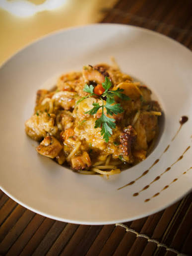
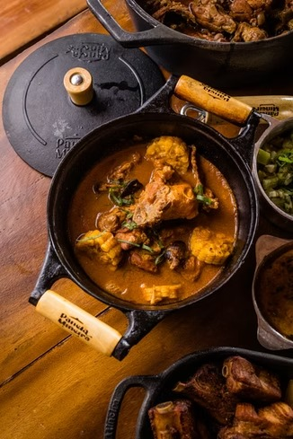
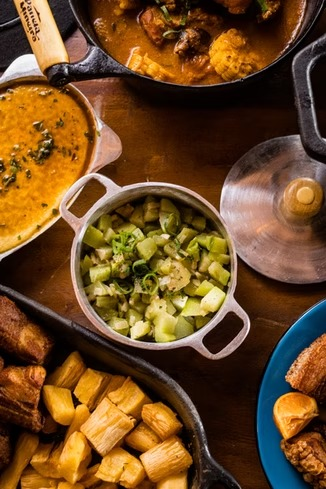
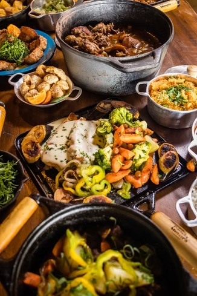
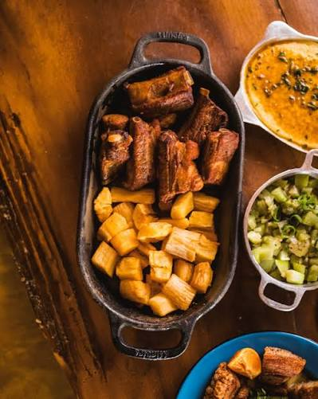
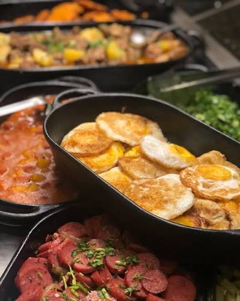

Tradicional Restaurante de Comida Mineira em Betim, Minas Gerais
Cardápio ReservasQUEM SOMOS


O "Sítio Casarão" como era conhecido, foi construído pelo Sr. Luiz Dias e a Sra. Cláudia Dias já há algum tempo, um sonho que ao longo de muitos anos se tornou realidade.
Agora o local está aberto ao público como "O Casarão Restaurante". Localizado na cidade de Betim, Minas Gerais, é um lugar pra cumê bem e viver uma experiência da época da vovó, é cada coisa boa que você ``num vai aguentá``.
Você tem que vim aqui vê os ``trem`` sô... Temos museu com antiguidades e carros antigos sempre passam por aqui também.
A cozinha é comandada por um povo ``bão dimais da conta``, a chef é a Lidiane Martins e seu esposo Alexandre Morais, que fazem um tanto de coisa boa também por aqui.
Não é um lugar somente para cumê, é pra saborear, prosear, relaxar e ter uma verdadeira experiência com a gastronomia mineira raiz, e, antes de ir embora, tomar aquele cafezinho adoçado com rapadura, levantar da mesa e dizer: “que trem bão sô!”
FAÇA SUA RESERVA AGORA
Nossas reservas são feitas por WhatsApp.
Reservar via WhatsAppFOTOS DE TREM DI CUMÊ






CONTATO & HORÁRIOS
Atendimento por ordem de chegada e com reservas pelo nosso WhatsApp abaixo.
Telefone / WhatsApp: (31) 98258-0519
Funcionamento
- SEXTA: 11h às 16h ( Feijoada Casarão )
- SÁBADO: 11h às 16h
- DOMINGO: 11h às 16h
- FERIADOS: 11h às 16h